Calendrier de l'Avent "Arcane"
2025
Contexte
Ce projet, réalisé dans le cadre d'un workshop mené par des anciens étudiants de l'école de design de Nantes, visait à concevoir un dispositif interactif avec une attention toute particulière sur l'implémentation de "bright" patterns dans l'expérience utilisateur.
Objectif
Concevoir un dispositif de calendrier de l'Avent interactif sur le thème d'un film ou d'une série (ici, la série "Arcane").
Travail réalisé

Idéation et création : définition du concept, de la charte graphique et du contenu pour le calendrier de l’Avent interactif.
Maquettage : réalisation d’une maquette fonctionnelle avec Figma.
Proof of Concept : création d’un prototype en HTML, CSS et JavaScript, avec Gemini (assistant IA de Google) permettant de dessiner par-dessus le retour vidéo de la caméra.
Mise en scène de type “salon” : mise en place d’un stand, avec kakémonos et affiches, dans l’enceinte de l’IUT afin de présenter le projet et de faire essayer le prototype interactif au public.
Outils utilisés
Canva, Figma, InDesign, VSCode (HTML, CSS, JavaScript), Gemini AI